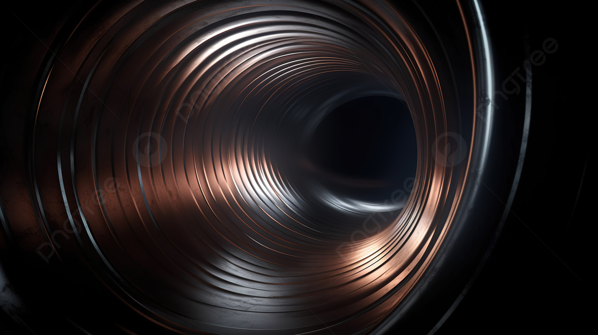

Fluid Mechanics: Explora, Comprende y Aplica
Explora el dinámico universo de la mecánica de fluidos. Desarrolla competencias esenciales para la ingeniería. Descubre la fascinante interacción de los fluidos y conquista desafíos innovadores en la ciencia y tecnología.
Presentación Autores
Mg. Oscar Ricardo Jurado Zambrano
Profesor en las áreas:
- Mecánica de Fluidos
- Computación Aplicada
Dr. Diego Valencia Enríquez
Profesor en las áreas:
- Métodos Numéricos
- Calculo Diferencial e Integral
Jose Waldo Castro Enriquez
Con habilidades en:
- Maquetación y Desarrollo de Páginas Web
Nicolas Guapacha Cortez
Con habilidades en:
- Maquetación y Desarrollo de Páginas Web
Fluid Mechanics
¡Bienvenido a nuestra plataforma de mecánica de fluidos! Descubre un mundo fascinante en cuatro secciones clave: Aprendizaje, donde encontrarás conceptos esenciales; Fenómenos, explorando las maravillas fluidodinámicas; Elementos, desglosando componentes clave; y Cálculos, aplicando teorías en problemas prácticos. ¡Sumérgete en el conocimiento y desata tu curiosidad explorando cada sección!
Aprendizaje
En nuestra sección de Aprendizaje, te invitamos a explorar los
cimientos de la mecánica de fluidos. Desde las propiedades inherentes
de los fluidos hasta la dinámica de sistemas de tuberías, sumergirse
en este espacio es clave para comprender conceptos esenciales.
Aquí, desentrañamos la complejidad detrás de la presión, la viscosidad y
otros fenómenos fluidodinámicos. Ya sea que estés comenzando o buscando
refrescar tus conocimientos, encontrarás una amplia gama de recursos,
desde tutoriales interactivos hasta videos educativos, diseñados para
fortalecer tu comprensión y prepararte para desafíos más avanzados en
el estudio de la mecánica de fluidos.
Fenómenos
En nuestra sección de Fenómenos, te invitamos a descubrir el comportamiento
de variables clave en los sistemas hidráulicos y térmicos. Aquí, podrás
visualizar animaciones interactivas que ilustran cómo la densidad, el caudal,
la temperatura y la prensa hidráulica influyen en el rendimiento de distintos
sistemas.
Desde conceptos básicos hasta aplicaciones avanzadas, este espacio está
diseñado para facilitar tu comprensión de estos fenómenos esenciales.
Ya seas un principiante o un profesional buscando profundizar en estos
temas, encontrarás herramientas que te ayudarán a perfeccionar tus
conocimientos y enfrentar retos más complejos en ingeniería.
Elementos
En nuestra sección de Elementos, te invitamos a conocer los accesorios
clave para sistemas de tuberías. Aquí, podrás explorar las características
de distintos componentes, como sus usos, materiales de fabricación y
aplicaciones.
Esta área está diseñada para ofrecerte una comprensión general de los elementos
que conforman un sistema de tuberías eficiente. Tanto si estás comenzando como
si deseas reforzar tus conocimientos, encontrarás información útil para
comprender mejor estos elementos y su importancia en el diseño y operación de
sistemas de conducción.

Cálculos
En nuestra sección de Cálculos, te invitamos a utilizar herramientas especializadas para resolver ejercicios relacionados con sistemas de tuberías. Aquí, encontrarás programas para abordar sistemas de clase I, clase II y clase III, así como sistemas en paralelo mediante el método de Hardy Cross. Además, dispondrás de tablas para la selección de valores adecuados y cálculos para sistemas de desagüe.